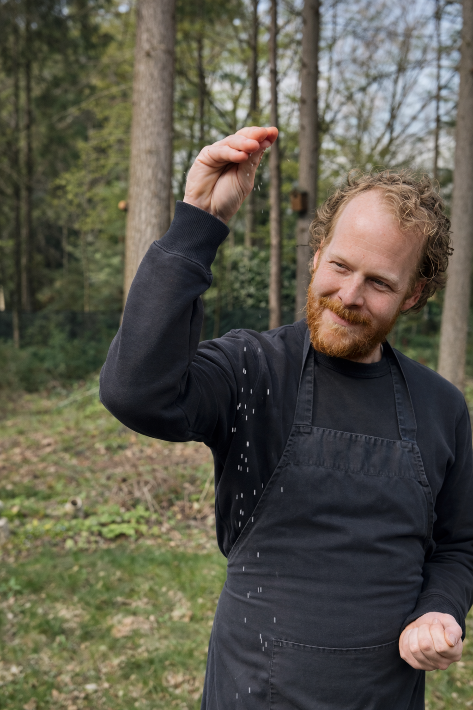
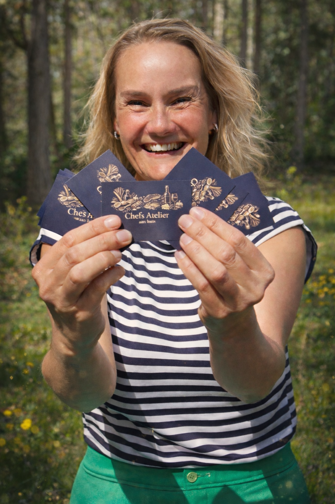

Over ons


Chefs Atalier is ontstaan vanuit een passie voor koken, gastvrijheid en het creëren van momenten die verder gaan dan alleen eten.
Wij geloven dat een diner meer is dan wat er op het bord ligt. Het is een ervaring waarin smaak, aandacht en beleving samenkomen.
In plaats van een traditionele scheiding tussen keuken en tafel, brengen wij deze twee samen.
We koken, vertellen en betrekken, waardoor gasten niet alleen aanschuiven, maar onderdeel worden van wat er gebeurt.
Onze werkwijze is persoonlijk en volledig op maat.
Van een intiem diner tot een uitgebreide avond met meerdere gangen of een interactieve borrel: elke ervaring wordt afgestemd op het gezelschap, de setting en de wensen van de gast.
Achter Chefs Atalier staan Olf, het brein achter de gerechten. En Ro, de gastvrouw die meedenkt en verbindt.
Met een achtergrond in de professionele keuken en een sterke focus op kwaliteit werken wij met seizoensproducten en een no waste filosofie, waarin creativiteit en duurzaamheid hand in hand gaan.
Jouw avond, onze zorg.